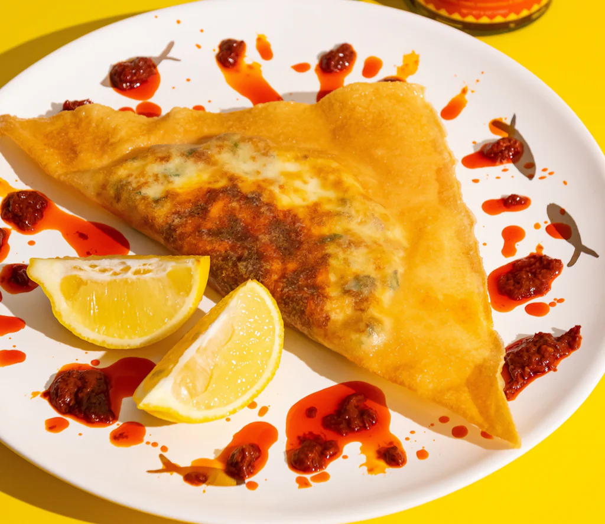

Home
Brik

Description
Brik is a popular Tunisian street food consisting of a thin pastry shell filled with a variety of savory ingredients. The most common filling includes a mix of tuna, egg, capers, and parsley, which is then deep-fried until crispy and golden.
Ingredients
- Pastry sheets (brick or phyllo)
- 1 can of tuna (drained)
- 4 eggs
- 2 tablespoons of capers (drained)
- Fresh parsley (chopped)
- 1 onion (chopped)
- Salt and pepper to taste
- Oil for frying
Steps
- Mix the tuna, capers, chopped onion, parsley, salt, and pepper in a bowl.
- Place a spoonful of the mixture onto a pastry sheet.
- Crack an egg over the mixture.
- Fold the pastry into a triangle or square, sealing the edges with a bit of water.
- Heat oil in a pan and fry the brik until golden and crispy.
- Serve hot with lemon wedges.
If you like this recipe, please star the repo on GitHub
Learn to code with The Odin Project